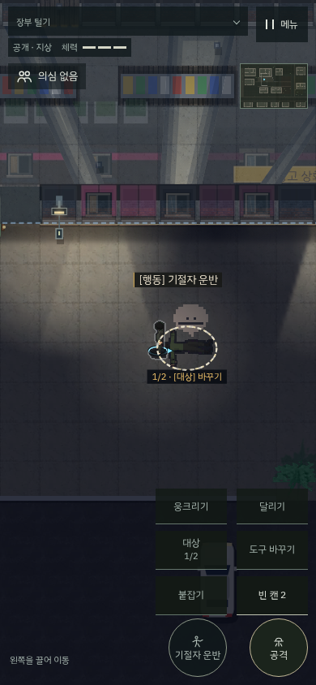
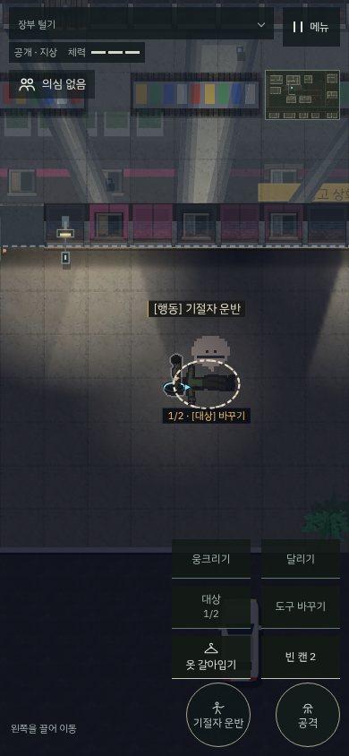

<!doctype html><html lang="ko"><meta charset="utf-8"><meta name="viewport" content="width=device-width,initial-scale=1"><title>갈아입기·제압 거리 전후 비교 · 야행</title><style>
*{box-sizing:border-box}body{margin:0;background:#0e171c;color:#e7e4d6;font:15px/1.7 system-ui,sans-serif}main{max-width:1840px;margin:28px auto;padding:0 24px}h1{font-size:28px;margin:0 0 8px}p{color:#b7c2c2;margin:0 0 20px}a{color:#d7ba73}nav{display:flex;justify-content:space-between;gap:16px;flex-wrap:wrap;margin:22px 0}nav div{display:flex;gap:8px}button{min-height:44px;padding:8px 16px;background:transparent;border:1px solid #526168;color:#c9d2ce;font:inherit;cursor:pointer}button[aria-pressed=true]{color:#172126;background:#d7ba73;border-color:#d7ba73}button:focus-visible,a:focus-visible,input:focus-visible{outline:2px solid #f5e3a5;outline-offset:4px}.pair{display:grid;grid-template-columns:1fr 1fr;gap:20px;align-items:start}.pair figure{margin:0;min-width:0}.pair figcaption{margin-bottom:10px;font-size:17px;font-weight:400}.pair img{display:block;width:100%;height:auto;border:1px solid #344248}.pair.mobile{max-width:820px;margin:auto}.overlay{max-width:1440px;margin:auto}.overlay.mobile{max-width:390px}.stage{position:relative;aspect-ratio:1440/900;--split:50%}.mobile .stage{aspect-ratio:390/844}.stage img{position:absolute;inset:0;display:block;width:100%;height:100%}.stage .before{clip-path:inset(0 calc(100% - var(--split)) 0 0)}.divider{position:absolute;inset:0 auto 0 var(--split);width:2px;background:#e8d59f}.tag{position:absolute;top:10px;padding:4px 9px;background:#0b151cf0;color:#f0e6ca;font-size:12px}.tag.left{left:10px}.tag.right{right:10px}.range-label{display:block;margin-top:14px;color:#cbd3ce}input{display:block;width:100%;height:44px;accent-color:#d7ba73;cursor:ew-resize}footer{margin-top:28px;color:#a6b2b3;font-size:13px}[hidden]{display:none!important}@media(max-width:650px){main{padding:0 12px;margin:20px auto}h1{font-size:23px}.pair{gap:10px}.pair figcaption{font-size:13px}button{padding-inline:11px;font-size:13px}}
select{font:inherit;color:#e7e4d6;background:#142127;border:1px solid #526168;min-height:44px;padding:8px 12px;margin-left:12px}label{color:#b7c2c2}</style><main><h1>갈아입기·제압 거리 전후 비교</h1><p>같은 화면 크기 · 같은 배치. v160과 v161의 실제 실행 화면입니다.</p><nav aria-label="비교 설정"><div><button id="mobile" aria-pressed="true">모바일 390 × 844</button><button id="pc" aria-pressed="false">PC 1280 × 800</button><button id="landscape" aria-pressed="false">가로 844 × 390</button><button id="small" aria-pressed="false">작은 화면 320 × 568</button></div><div><button id="side" aria-pressed="true">나란히 보기</button><button id="swipe" aria-pressed="false">겹쳐 비교</button></div></nav><nav><label for="scene">화면 선택<select id="scene"><option value="clothing">쓰러진 적 옆 · 갈아입기 버튼</option><option value="range">40px 거리 · 기본 제압 가능 여부</option></select></label></nav><section class="pair" id="pair"><figure><figcaption>이전 · v160</figcaption><a id="beforeLink" href="before-clothing-mobile.png" target="_blank" rel="noopener"></a></figure><figure><figcaption>변경 후 · v161</figcaption><a id="afterLink" href="after-clothing-mobile.png" target="_blank" rel="noopener"></a></figure></section><section class="overlay" id="overlay" hidden><div class="stage" id="stage"><div class="divider"></div><span class="tag left">이전 · v160</span><span class="tag right">변경 후 · v161</span></div><label class="range-label" for="split">비교 경계를 움직여 보세요</label><input id="split" type="range" min="0" max="100" value="50" aria-label="이전 화면이 보이는 비율"></section><footer>같은 시드·화면 크기의 실제 실행 원본입니다. 비교를 위해 열린 지상에 적 또는 기절한 몸을 배치한 통제 장면이며, 본편 완주 화면은 아닙니다. 이미지 보정·합성은 없습니다.<br>변경 후에는 별도로 실제 공격 입력과 갈아입기 입력을 실행해 기절·3초 작업·옷 변경을 확인했습니다.<br><a href="captures.json">촬영 조건·원본 해시</a> · <a href="after-checks.json">PC·터치 검사</a> · <a href="details.html">수정 내용</a> · <a href="../">게임 플레이</a></footer></main><script>
let device='mobile',view=matchMedia('(max-width:650px)').matches?'swipe':'side',scene='clothing';const $=id=>document.getElementById(id);
function render(){const suffix=scene+'-'+device;$('stage').style.aspectRatio={pc:'1280/800',mobile:'390/844',landscape:'844/390',small:'320/568'}[device];for(const k of ['pc','mobile','landscape','small'])$(k).setAttribute('aria-pressed',String(device===k));for(const k of ['side','swipe'])$(k).setAttribute('aria-pressed',String(view===k));$('pair').hidden=view!=='side';$('overlay').hidden=view!=='swipe';$('pair').classList.toggle('mobile',device!=='pc');$('overlay').classList.toggle('mobile',device!=='pc');for(const[id,prefix]of [['beforeImage','before'],['afterImage','after'],['swipeBefore','before'],['swipeAfter','after']])$(id).src=prefix+'-'+suffix+'.png';$('beforeLink').href='before-'+suffix+'.png';$('afterLink').href='after-'+suffix+'.png'}
$('scene').onchange=e=>{scene=e.target.value;render()};for(const k of ['pc','mobile','landscape','small'])$(k).onclick=()=>{device=k;render()};for(const k of ['side','swipe'])$(k).onclick=()=>{view=k;render()};$('split').oninput=e=>$('stage').style.setProperty('--split',e.target.value+'%');
render();</script></html>